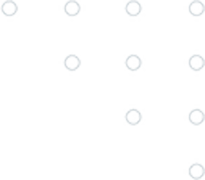

Login2 — Phoenix re-skinned through @vsee/ui
Brand
Green (default)
Blue
Purple
Mode
Switch to dark
Email
Welcome back
Change email
Password
Continue
Don't have an account?
Sign up
or
Continue with Google
Continue with Apple
v0.1.0 · @vsee/ui · login2 prototype